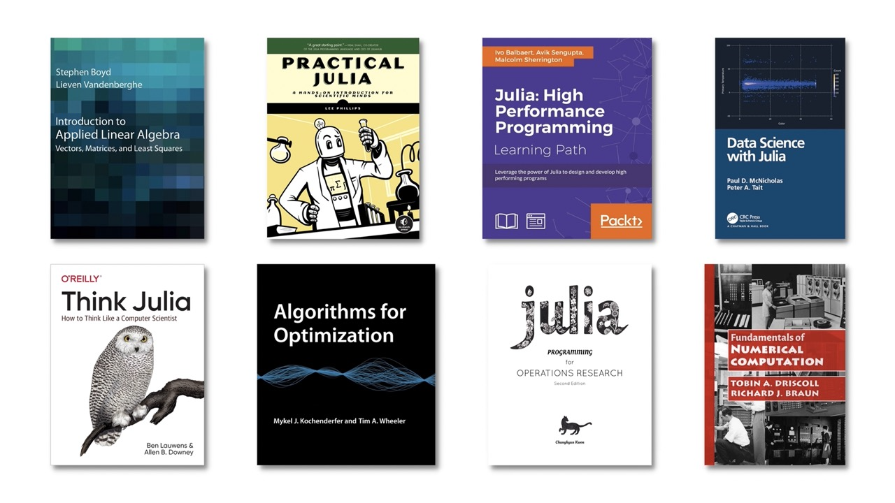

Get Started with Julia
Julia Academy
Do you learn best by watching instructor led videos on programming? Check out JuliaAcademy which was prepared by core Julia developers in collaboration with JuliaHub.
Exercism Julia Track
Prefer to learn by doing exercises and getting feedback from a team of welcoming mentors? Check out the Julia Track on Exercism.org.
The Manual
Want to just give it a shot and dive right into the Julia documentation? Check out the getting started guide.
YouTube
The Julia Language's YouTube is the one stop shop for all things Julia on YouTube. From JuliaCon recordings to virtual meetups on technical topics, our YouTube channel hosts much of the existing community created Julia content. There are also a few MOOC's that have been created using Julia.
We also have a curated set of Julia video tutorials that have accompanying Jupyter Notebooks viewers can follow along with.
Julia Tutorials
We have created a non-exhaustive list of community provided Julia tutorials. Check them out to learn Julia through the lens of someone from the community. Once you're familiar with the language itself, the blog ModernJuliaWorkflows will teach you the secrets of productive Julia development.
There also exist a growing number of curated Julia courses in the form of video lecture series. These courses are freely available on YouTube. You can also sign up through JuliaAcademy to track your progress, take quizzes, and get certificates.

Books
Interested in getting a Julia book? Check out the amazing books members of our community have written since Julia was created.
Pluto.jl notebooks
Pluto.jl is a Julia programming environment designed for learning and teaching, and it is a great way to get started with Julia programming, packages and visualisation.
Pluto.jl is easy to install, and you can write interactive documents with no prior experience.
In the Classroom
Julia is ready for the classroom. We encourage instructors to participate in the Julia community for questions about Julia or specific packages. This page puts together various resources that instructors and students alike may find useful. See where Julia is being taught today.